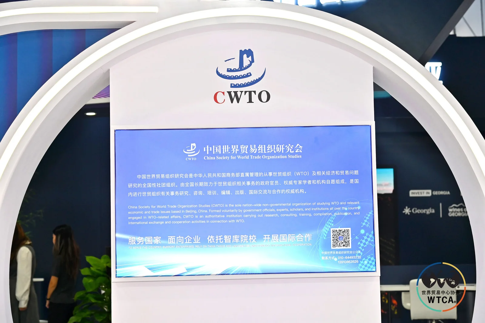
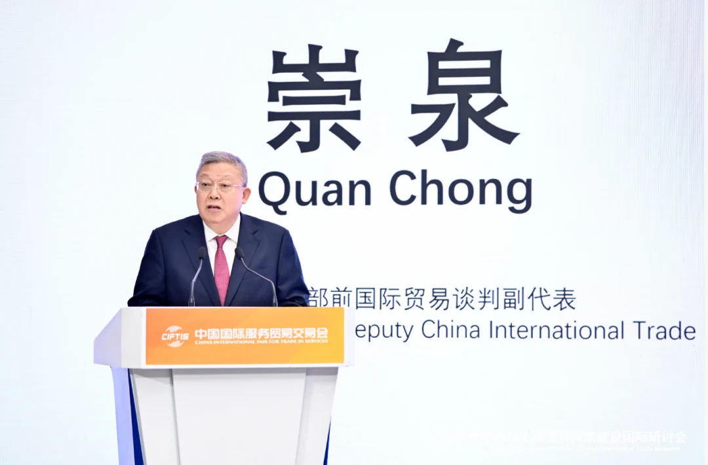
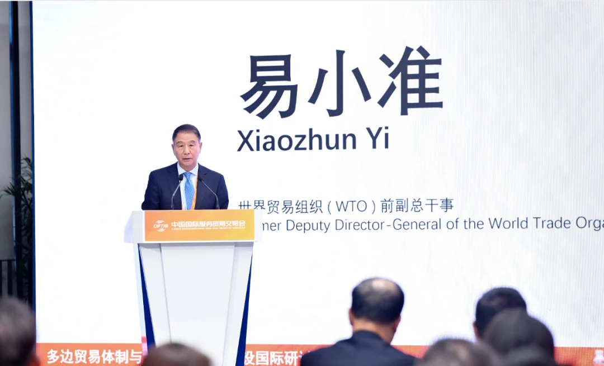
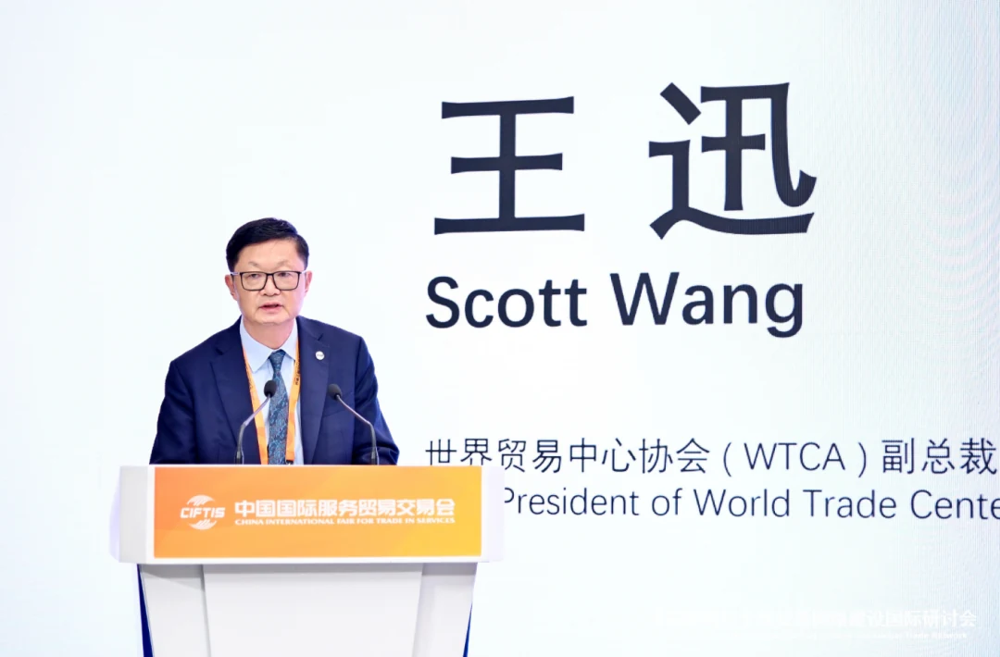
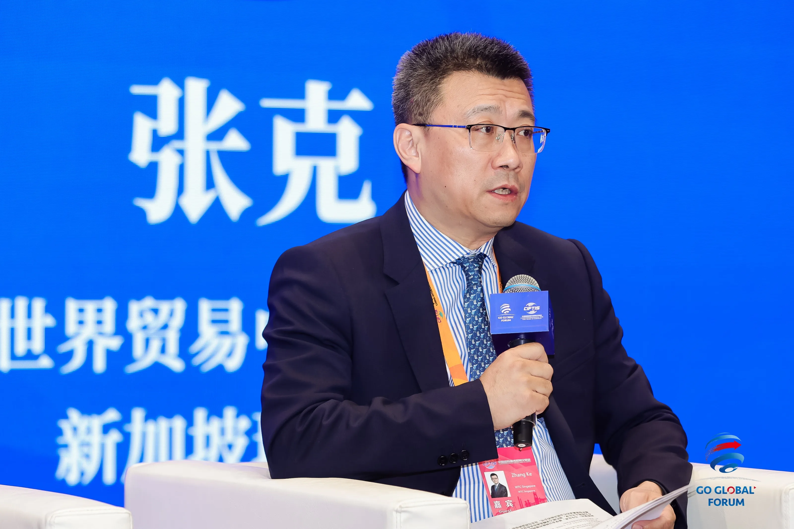
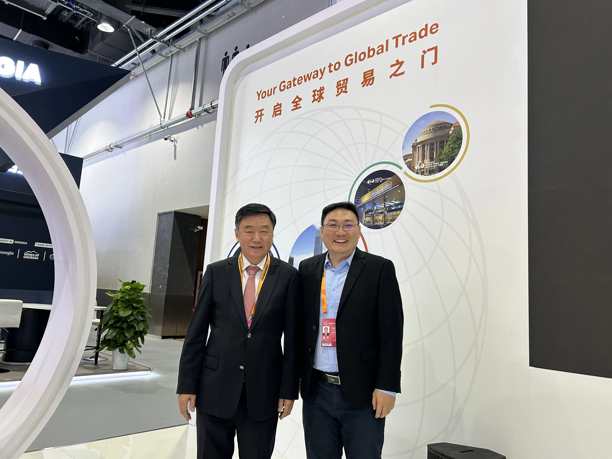

Summary: During CIFTIS 2026, the World Trade Centers Association (WTCA) and the China Society for World Trade Organization Studies (CWTO) co-hosted the International Symposium on the Multilateral Trading System and Global Trade Network Development. WTC Singapore records that high-level dialogue, Chairman Blake Zhang's contribution to the roundtable, and my own conversation at the booth with Ma Jianchun, President of CWTO, former Director-General of the Department of Foreign Affairs of the Ministry of Commerce and former Chinese Ambassador to The Gambia.
I. Background: the WTCA is one of CIFTIS's core international partners
The 2026 China International Fair for Trade in Services (CIFTIS) opened at Beijing's Shougang Park. The World Trade Centers Association (WTCA) is one of the five core international partner organisations of CIFTIS. During the fair, WTCA members from multiple cities gathered at the WTCA's dedicated pavilion — where the WTC Singapore booth was also located.

II. The symposium: over a hundred representatives from government, business and academia on one subject — the global network
On the afternoon of 10 September, the International Symposium on the Multilateral Trading System and Global Trade Network Development, co-hosted by the World Trade Centers Association (WTCA) and the China Society for World Trade Organization Studies (CWTO), was held during CIFTIS, with support from China World Trade Center and the Beijing Service Trade Association.
Chong Quan, former Deputy Representative for International Trade Negotiations of China's Ministry of Commerce, attended and addressed the gathering, while Yi Xiaozhun, former Deputy Director-General of the World Trade Organization (WTO), delivered a keynote speech. Speakers from the International Trade Centre (ITC), the British Embassy in China, the Australian Embassy in China and the United Nations Industrial Development Organization (UNIDO) also gave keynote addresses. Two roundtables followed, on “Expanding High-Level Opening Up and Multilateral Trade Rules” and “The WTC Network and Global Trade Development.” More than a hundred representatives from government, business and academia gathered to examine the value of the multilateral trading system and of global networks.


Held as one of the events of the 2026 WTCA Chinese-Speaking Regions Conference, the symposium drew participation from more than a dozen World Trade Centers across Chinese-speaking regions and close to forty delegates. Wang Xun, WTCA Vice President, delivered remarks on behalf of the organisers, and Li Mingxing — WTCA Global Director, Standing Director of CWTO and President of the Asia-Pacific World Trade Business Alliance — moderated the session.

III. Chairman Blake Zhang at the roundtable: turning “network” from a noun into a pathway
At the roundtable on “The WTC Network and Global Trade Development,” Shen Bai, Chairman of WTC Shenyang, moderated the discussion. Blake Zhang, Chairman of WTC Singapore, was joined by Hao Liyun, Vice Chairman of WTC Tianjin; Zhao Hongjie, Vice Chairman of WTC Chongqing; and Yin Jinrui, President of WTC Nanning. With the heads of several World Trade Centers across Chinese-speaking regions on the same stage, the discussion turned on precisely what WTC Singapore has long practised: the value of a global trade network lies not in how many locations it counts, but in whether companies can actually put it to work.

IV. My encounter at the booth: the symposium ends, the connecting begins
The symposium was about the multilateral trading system. What actually makes a “global network” work, however, tends to happen in corners like a booth. At the WTC Singapore booth I met Ma Jianchun, President of the China Society for World Trade Organization Studies, former Director-General of the Department of Foreign Affairs of the Ministry of Commerce and former Chinese Ambassador to The Gambia. An unscripted conversation between two people turned to the thing closest to execution, just beyond the symposium's theme — that global trade networks are ultimately built by specific individuals, one face-to-face handshake at a time.
We exchanged views on how World Trade Center networks across Chinese-speaking regions can work together, and took a photograph together. To me that frame matters as much as the hundred-person dialogue in the main hall: high-level discussion sets direction, while an encounter at a booth turns direction into connections that can be acted on, trusted and delivered. That is the point of WTC ONE Club — not to let “global network” remain a noun, but to make it a real pathway that members can draw on every time they go global.
The heat of an exhibition passes. But once a node is connected across oceans, cities and levels, it does not come unplugged. These are the two frames this note records.

About the World Trade Centers Association
The World Trade Centers Association (WTCA), founded in 1970, is a non-profit, non-political organization dedicated to establishing and operating World Trade Centers worldwide to promote regional economic development and international trade and investment. Headquartered in New York, its global network spans nearly 100 countries and territories with over 300 World Trade Centers, serving thousands of member companies and clients by helping them source, find customers and improve financing and investment access.
About World Trade Center Singapore (WTC Singapore)
World Trade Center Singapore is the WTCA's officially authorized member in Singapore. Through three business pillars — WTC ONE Club, GlobalX and WTC Fund — it connects global capital, innovation resources and market opportunities, providing enterprises with cross-border matchmaking and globalization support.